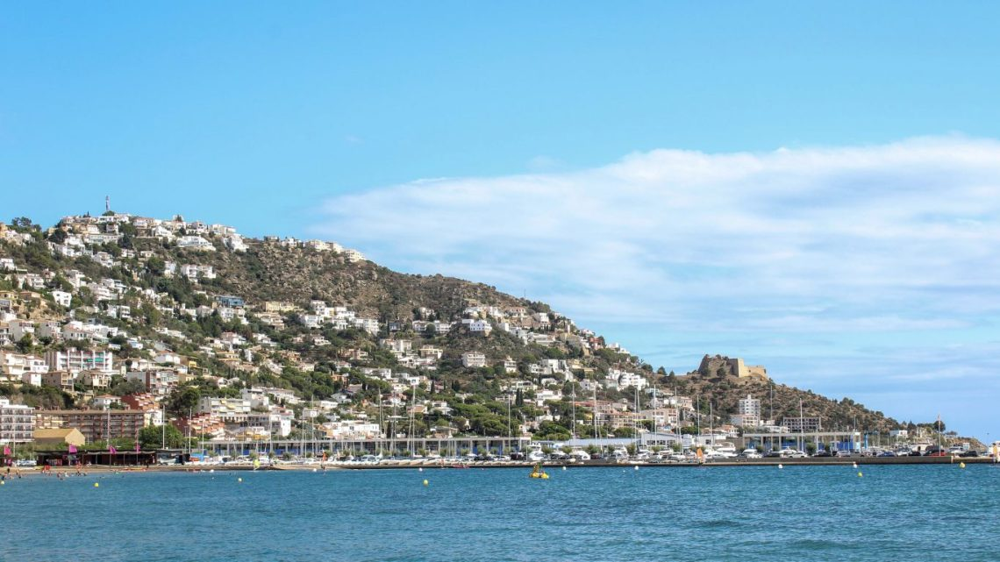
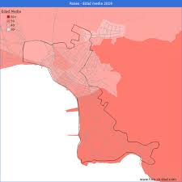
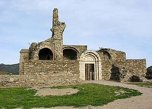
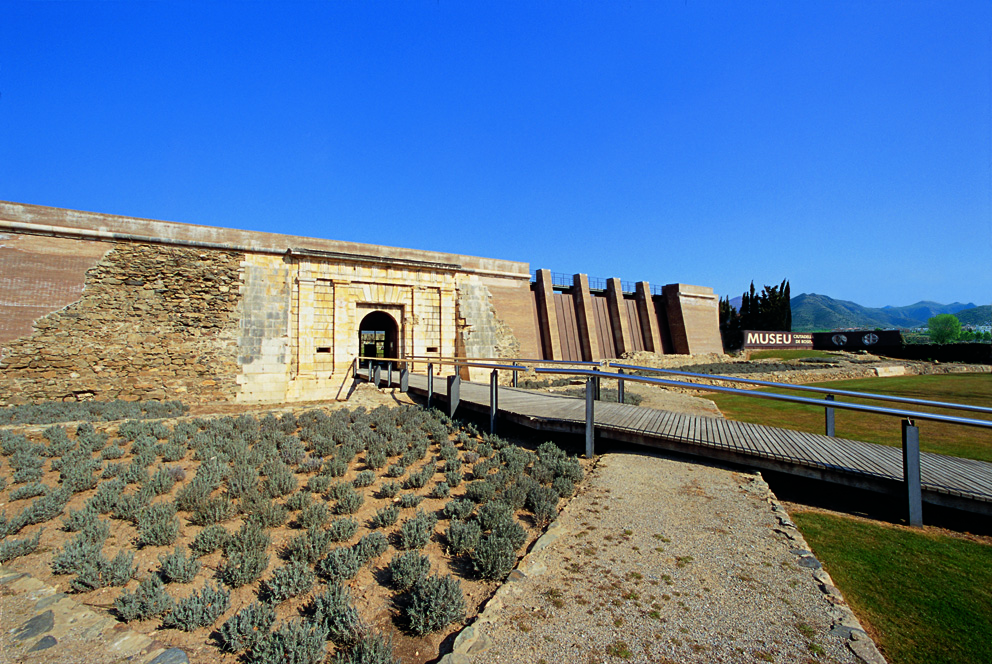
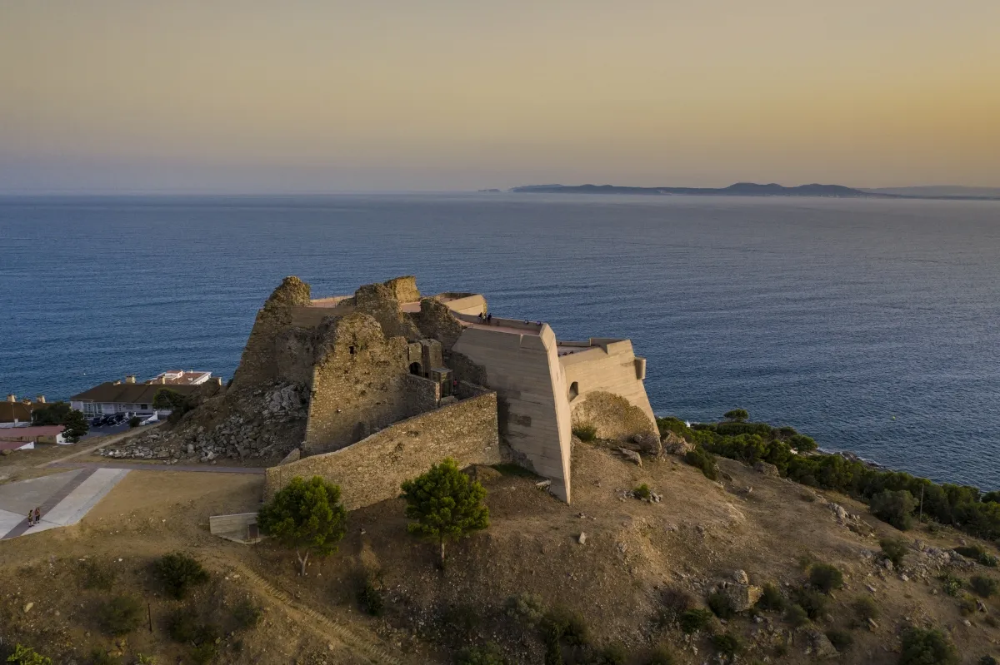
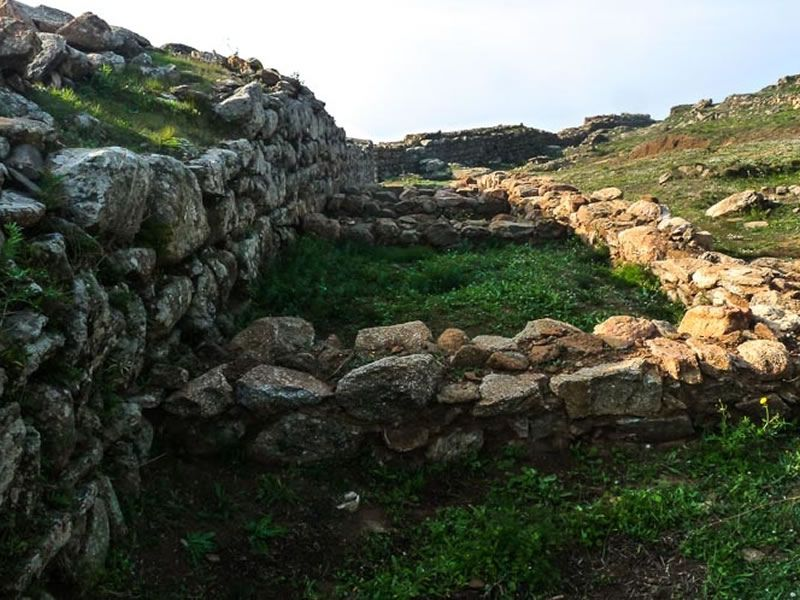

L'àrea que ocupa el municipi de Roses té vestigis d'ocupació humana des del neolític. Escampats pel terme hi ha una quantitat important de monuments megalítics, entre els quals destaca el dolmen de la Creu d'en Cobertella, un dels més grans de Catalunya, datable cap a l'any 3000 aC. El seu paper militar, abans tan important, havia quedat anul·lat per la modificació de la frontera pirinenca i pel desmantellament de l'imperi hispànic a Europa, però també pels avenços en estratègia militar que convertiren en obsoletes les seves fortificacions, d'altra banda en molt mal estat. A causa de la seva obsolescència i davant la impossibilitat de defensar-les, demostrada arran d'un cop de mà fallit de la guerrilla el febrer de 1813, el comandament francès en decidí la inutilització intencionada, i foren volats el castell de la Trinitat i alguns punts de les muralles de la vila. D'altra banda, el paper militar que havia exercit Roses ja havia estat transferit a Cartagena.
Com és comú en moltes àrees turístiques, la població de Roses pot tenir una estructura demogràfica que reflecteixi una proporció major de persones grans, així com una població activa més jove involucrada en la indústria turística i altres sectors econòmics. Tot i que durant l'any Roses té censats aproximadament 20.000 habitants, la vila acull durant l'estiu un nombre de visitants proper als 120.000 turistes, que s'hostatgen en una extensa oferta d'hotels, càmpings, apartaments i segones residències.
Santa Maria de Roses fou un monestir benedictí fundat sobre les restes de la ciutat de Rhode, a l'antic comtat d'Empúries, dins els límits del bisbat de Girona, situat a l'actual terme municipal de Roses (Alt Empordà). Les seves restes són a l'interior del recinte de l'anomenada Ciutadella de Roses i formen part del Museu de la Ciutadella de Roses. El monestir està inclòs en les disposicions legals de protecció del patrimoni històric que afecten el conjunt del recinte de la Ciutadella de Roses.
El nom popular de ciutadella, però, és tècnicament incorrecte, perquè no es tracta d'una fortalesa annexa a una ciutat emmurallada, sinó de les autèntiques muralles de la vila vella de Roses, les restes de la qual es conserven al seu interior. Només a finals del segle xviii i principis del xix l'antiga fortificació passà a exercir, de fet, el paper de ciutadella en relació amb la nova població, que s'havia traslladat extramurs però que mai no disposà d'una muralla de defensa. És molt més escaient, per tant, la també popular denominació de les Muralles.
El castell de la Trinitat és un edifici situat a l'est del nucli urbà del municipi de Roses (Alt Empordà). Es troba al Golf de Roses, a la punta de la Poncella, sobre el far, a uns 60 metres sobre el nivell del mar. El topònim prové d'una ermita bastida l'any 1508, que fou destruïda, juntament amb una torre de defensa que s'alçava a la zona, quan es construí el castell. L'emperador Carles I va manar construir-lo amb anterioritat a la construcció de la Ciutadella de Roses. Les obres s'iniciaren el 2 de gener de 1544 i s'acabaren a mitjans de 1551. L'autor del projecte fou l'enginyer castellà Luís de Pizaño. És un edifici declarat bé cultural d'interès nacional.
Poblat visigòtic del Puig Rom és al municipi de Roses (Alt Empordà) al cim del puig de les Muralles, turó situat al nord del puig Rom i a l'est del nucli urbà de Roses. Està envoltat per les construccions que conformen la urbanització del puig Rom, excepte per les vessants nord i est. Constitueix un dels pocs i millors conservats recintes d'època visigòtica de tota la península Ibèrica. La seva finalitat era defensiva i estratègica.
Roses és un municipi de Catalunya situat a la comarca de l'Alt Empordà que ocupa la meitat sud de la península del cap de Creus. És centrat a la vila del mateix nom, situada al centre de la badia de Roses i a l'extrem nord del golf de Roses. És un centre turístic amb urbanitzacions, hotels i altres equipaments, dos ports (pesquer i esportiu) i un lloc atractiu i de gran relleu en el sector septentrional de la Costa Brava. El clima, que acusa la freqüent acció de la tramuntana, és assuaujat per la mar. La costa del municipi de Roses inclou una llarga platja de sorra, a la façana marítima de la població (entre el Port Nou i el canal de Riu Grau); i, més a l'est, un bon nombre de cales, entre les quals destaquen les de les Canyelles Petites, l'Almadrava (o les Canyelles Grosses), Murtra, Rustella, Montjoi, Pelosa, i Jóncols.
Ports de la Generalitat, que preveu una inversió de 30 milions d’euros fins als 2027 en els ports que són de competència de la Generalitat. A les instal·lacions de la Costa Brava s’hi executaran projectes per valor d’11,2 milions d’euros. Els ports de Roses i el Palamós seran els que rebran més inversions. «El nostre objectiu és incrementar el compromís ambiental dels ports, la promoció de la seva activitat i la seva integració al territori, a les trames urbanes», va dir la consellera de Territori, Ester Capella.
Pel que fa a Girona, el mapa contempla un total de 1.250 artefactes de guerra trobats des de l’1 de gener de 2012 fins a dia d’avui. Concretament en 13 anys s’han descobert 713 projectils d’artilleria, 77 bombes d’aviació, 205 granades de mà, 83 granades de morter, una granada de fusell, 157 espoletes, 10 bombardes, tres coets i una mina.